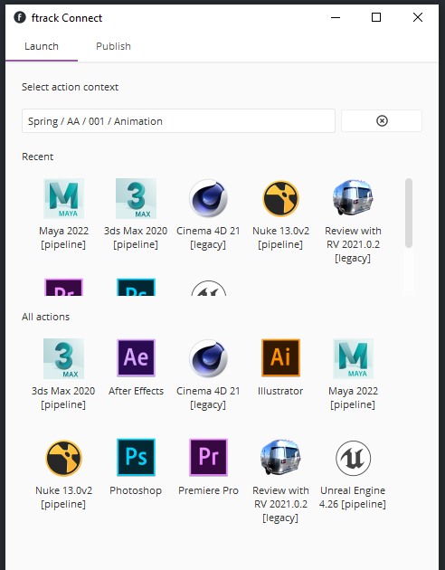
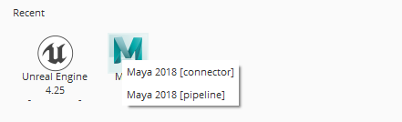

Using integrations and actions¶
The pre-built packages installed from the Integrations webpage contains a set of integrations with different creative applications. These integrations can be launched directly from Connect or the ftrack web interface through the use of Actions.
Connect provides an interface in the standalone application to run your actions. Actions in ftrack provide a standardised way to integrate other tools, either off-the-shelf or custom built, directly into your ftrack workflow.
Using actions you can, for example, launch applications for a task you are working on, generate a custom report or generate your entire filesystem structure for a project with one click.
See also
ftrack:using/actions
Launching actions in Connect¶
To launch an action, select an entity for which to launch the action and press the action in the list below.
Actions are grouped based on their label and a context menu will be shown if multiple variants are available.
See also
You can also launch actions from the web interface.
ftrack:using/actions
Limitations¶
Connect will currently only list actions available in the running process and will therefore not include actions running on any remote servers.
Actions in connect does currently not support custom UI. You will see an error message if you try to run an action which returns an UI configuration.